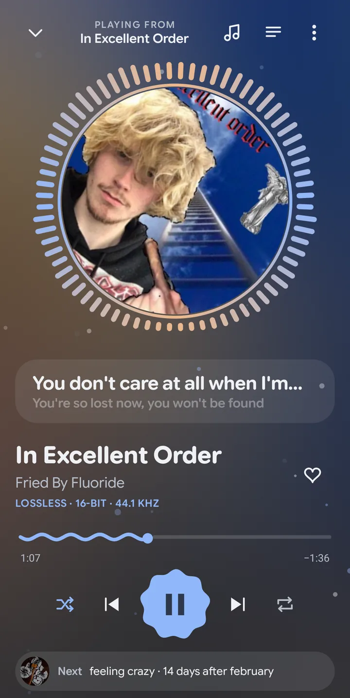
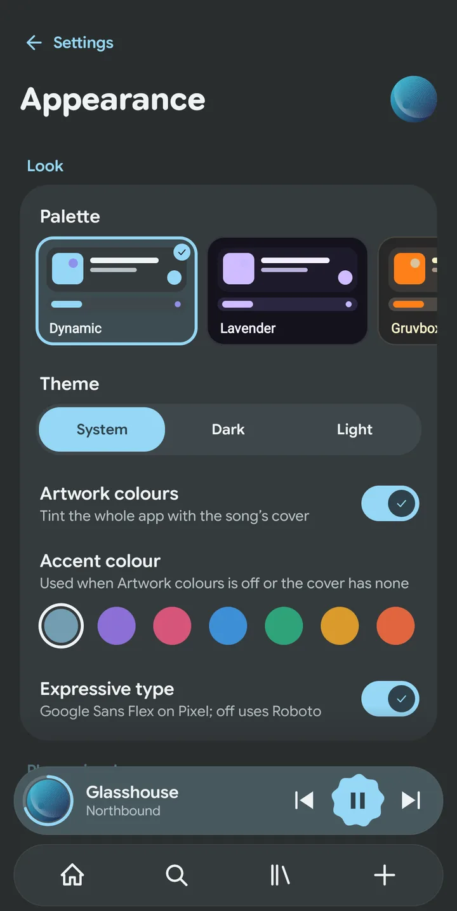
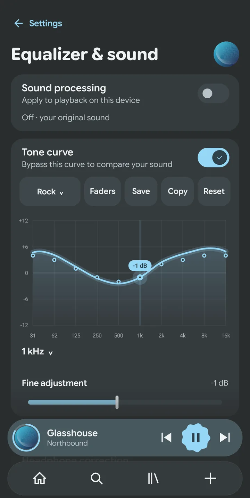
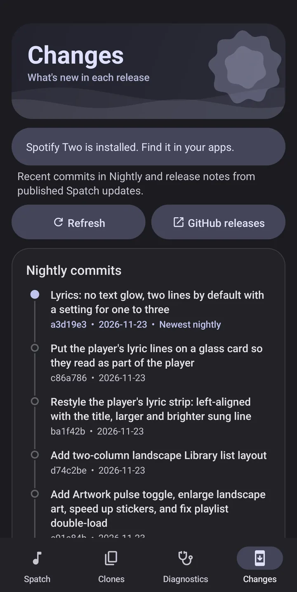
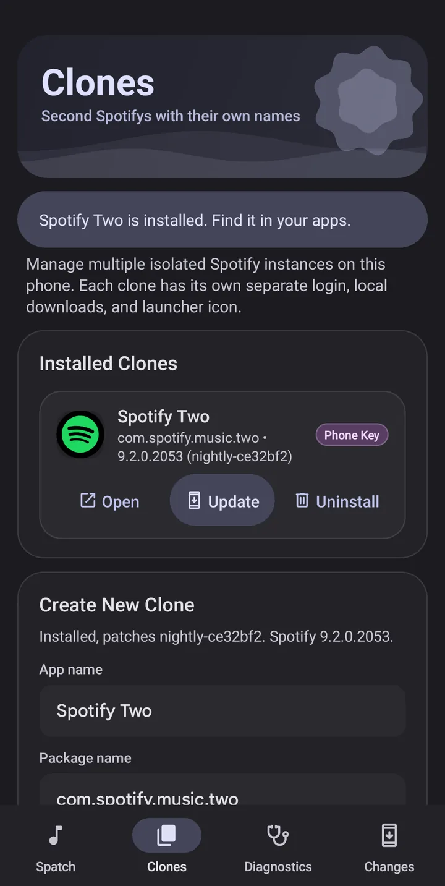

Lyrics that keep your place
Open lyrics from the player and the current line lights up as it’s sung. The column glides to keep it centred, lines you’ve passed fade back, and tapping any line jumps the song there.

Spatch patches the official Spotify app on Android so it opens to its own player, library and settings. Your account, playback and downloads stay Spotify’s.
For Spotify 9.2.0.2053 on 64-bit Android 10 or newer.



Spatch changes the screens, not the service. Spotify still signs you in, streams and downloads music, runs Connect and keeps your library. Ads and account limits work as they do in the regular app.
The player, lyrics, queue, looks and sound, as they appear on the phone.
Open lyrics from the player and the current line lights up as it’s sung. The column glides to keep it centred, lines you’ve passed fade back, and tapping any line jumps the song there.
The queue shows what’s playing and what comes next. The player menu has a sleep timer, Play on another device for Connect speakers, Share and the player’s own settings.
Your picture at the top of every page opens Profile, Queue, Downloads and Settings.


Pick a palette, or let the app take its colours from each cover. Choose light, dark or the system setting, and an accent colour for songs without art.
The player’s visualizer can be bars, a ring, a contour or nothing. Spinning artwork, the bass pulse, the cover glow and the blurred backdrop each switch on and off on their own.
Try the app’s palettes on this page.


Drag a 10-band curve, start from a preset like Rock or Vocals, or load an AutoEq correction made for your headphone model. Bass boost, loudness compensation, reverb and a limiter sit on the same page.
Turn the curve off for a moment to hear the difference.

Spatch Manager does the work on your phone. You need Spotify 9.2.0.2053 and a 64-bit phone on Android 10 or newer.
Download spatch-manager.apk from the releases page and install it.
If Spotify 9.2.0.2053 is installed unmodified, the Manager uses it. Otherwise, choose the matching Spotify APKM.
The Manager patches Spotify, signs it with a key made on your phone and installs it. Nothing is uploaded.
Its Changes page lists what’s new in each nightly. Turn on Tell me about new patches and it checks twice a day, then updates Spatch in place with the same key, so your login and downloads stay.
Clones installs a second Spotify with its own name, icon, login and downloads, so you can keep the regular app as well.


Android only installs an update signed with the same key. Use Export key in the Manager and keep the file somewhere safe: without it, updating means uninstalling first, which removes your downloads.
What people ask before they install.
Premium is what Spatch is built and tested with. Free accounts currently have trouble loading and playing music in Spatch.
Yes. The Manager can install Spatch as a second Spotify with its own name, icon, login and downloads, next to the one you already have.
No. The Manager patches Spotify and signs it on your phone, with a key it makes there. It only downloads the patch from GitHub.
Turn on Tell me about new patches and the Manager checks twice a day. Updates install over the top with the same key, so your login and downloads stay. On Android 12 and newer they install without a confirmation screen.
Android only accepts an update signed with the same key. Without it, you’d have to uninstall Spatch to update, which removes its downloads. Use Export key in the Manager and keep the file somewhere safe.
Spotify 9.2.0.2053. If that version is installed unmodified, the Manager uses it. If not, give the Manager the matching APKM file once and it keeps it for updates.
No. Spatch is an independent, open-source project under the MIT License. It changes how the Spotify app looks on your phone and nothing else.
Every change to Spatch, newest first. Each one builds a new nightly, which the Manager installs when Nightly patches is on.
Loading changes from GitHub…